library(gamlss2)
library(gamlss)
library(gamlss.ggplots)
library(ggplot2)
data(grip)Practical 5
Centile estimation
Instructions
Cohen et al. (2010) analysed the handgrip (HG) strength in relation to gender and age in 3766 English schoolchildren. The data are stored in the packages gamlss.data under the name grip and contain the variables grip and age. The aim here is to create centile curves for grip given age.
- Read the data file by typing
data(grip)into R. Note that the following packages are used here;
- Plot
gripagainstage.
ggplot(data=grip, aes(x=age, y=grip))+
geom_point()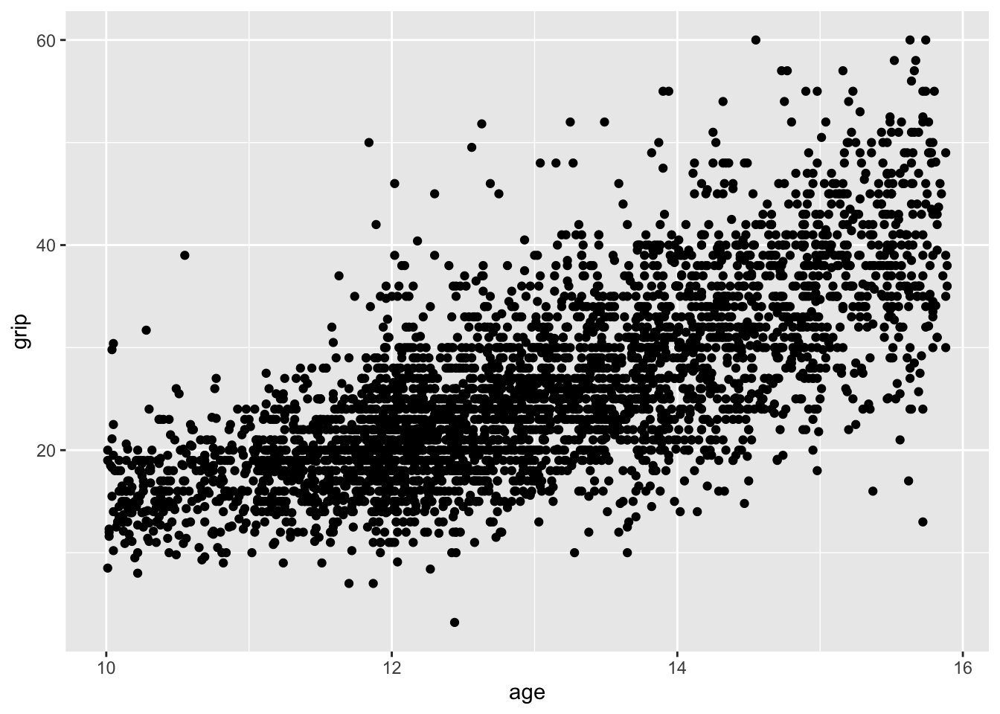
- Now follow the step described in the lecture to construct centile curves.
- select transformation
- fit different distribution models
- use diagnostic tools
- get the centiles
Select transformation
- explain why transformation for
ageis not needed for thegripdata set.
Fit different distribution models
gNO <- gamlss2(grip~s(age)|s(age), data=grip, family=NO)GAMLSS-RS iteration 1: Global Deviance = 24053.2467 eps = 0.113891
GAMLSS-RS iteration 2: Global Deviance = 24021.6332 eps = 0.001314
GAMLSS-RS iteration 3: Global Deviance = 24021.4363 eps = 0.000008 gBCCGo <- gamlss2(grip~s(age)|s(age)|s(age), data=grip, family=BCCGo)GAMLSS-RS iteration 1: Global Deviance = 23883.3976 eps = 0.582195
GAMLSS-RS iteration 2: Global Deviance = 23833.4638 eps = 0.002090
GAMLSS-RS iteration 3: Global Deviance = 23832.8656 eps = 0.000025
GAMLSS-RS iteration 4: Global Deviance = 23832.8624 eps = 0.000000 gBCPEo <- gamlss2(grip~s(age)|s(age)|s(age)|s(age), data=grip, family=BCPEo)GAMLSS-RS iteration 1: Global Deviance = 24053.1522 eps = 0.599432
GAMLSS-RS iteration 2: Global Deviance = 23807.0067 eps = 0.010233
GAMLSS-RS iteration 3: Global Deviance = 23804.0966 eps = 0.000122
GAMLSS-RS iteration 4: Global Deviance = 23804.0411 eps = 0.000002 gBCTo <- gamlss2(grip~s(age)|s(age)|s(age)|s(age), data=grip, family=BCTo)GAMLSS-RS iteration 1: Global Deviance = 23821.2288 eps = 0.384628
GAMLSS-RS iteration 2: Global Deviance = 23801.1684 eps = 0.000842
GAMLSS-RS iteration 3: Global Deviance = 23800.4809 eps = 0.000028
GAMLSS-RS iteration 4: Global Deviance = 23800.3591 eps = 0.000005 Use the generalised Akaike information criterion, GAIC, to compare the models.
gamlss2::GAIC(gNO, gBCCGo, gBCPEo, gBCTo) AIC df
gBCTo 23836.62 18.13081
gBCPEo 23842.14 19.04839
gBCCGo 23874.57 20.85453
gNO 24046.19 12.37571model_GAIC_lollipop(gNO, gBCCGo, gBCPEo, gBCTo)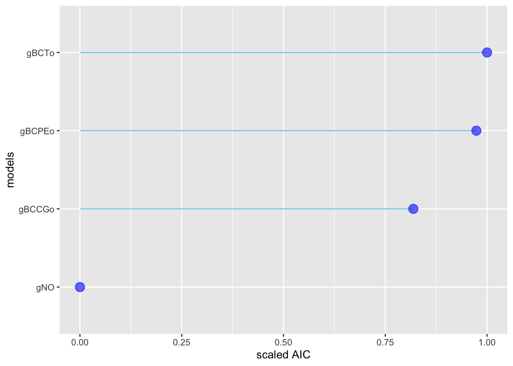
Use diagnostic tools
model comparision using worm plots
model_wp(gBCCGo, gBCTo)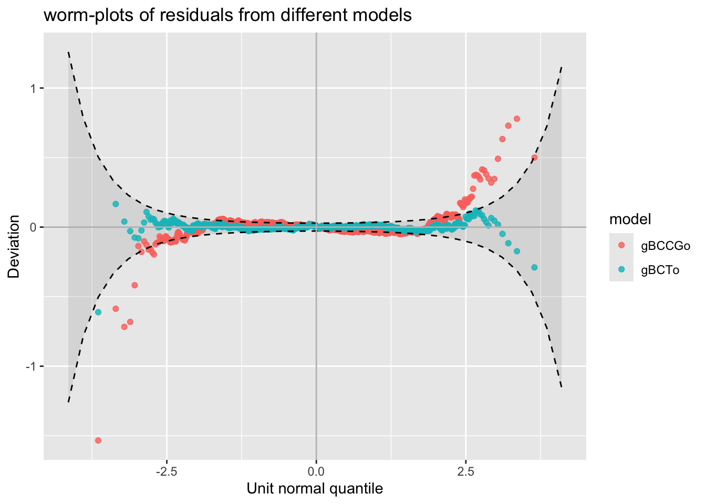
worm plots for diffrent values of age
model_wp_wrap(gBCCGo, gBCTo, gNO, xvar=grip$age)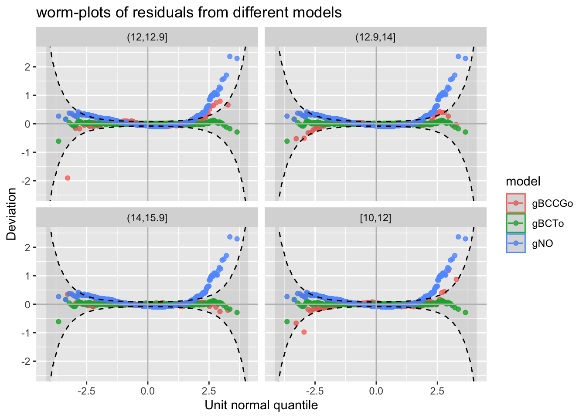
Model bucket plots
moment_bucket(gBCCGo, gBCTo, gNO, gBCPEo)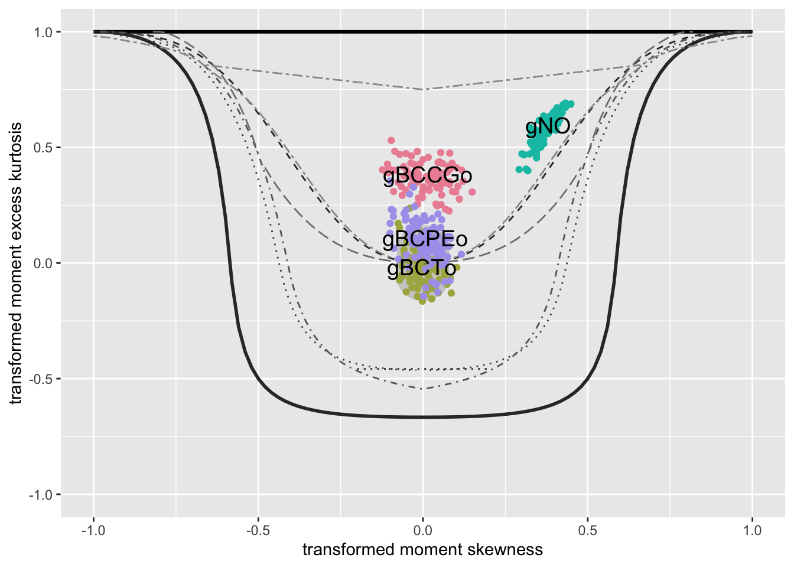
Q-statistics
gamlss.ggplots:::resid_Qstats(gBCTo, xvar=grip$age)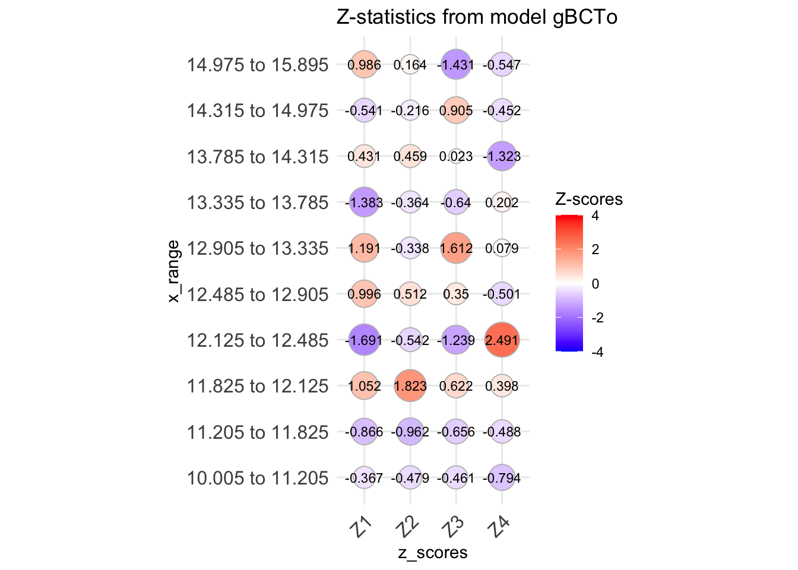
the fitted distribution parameters
plot(gBCTo)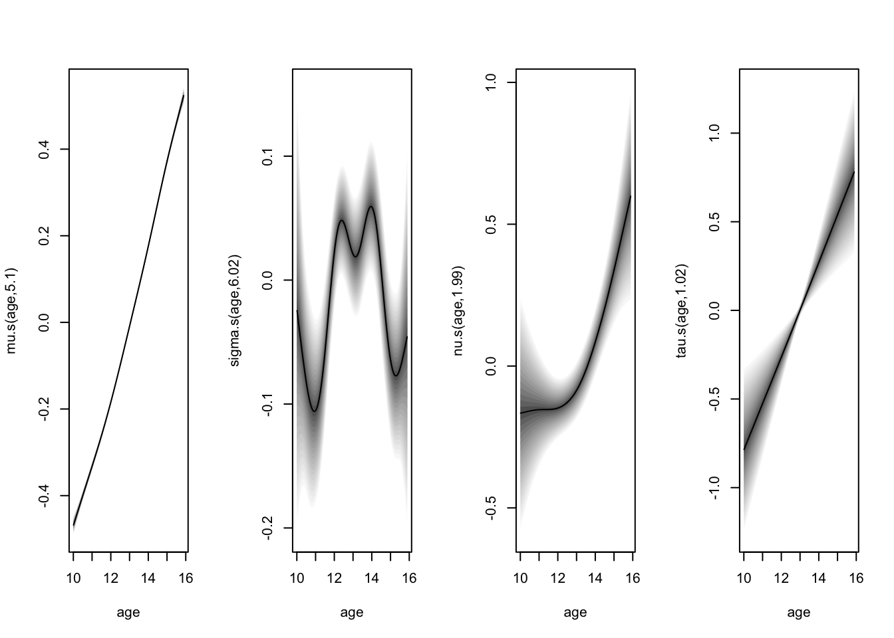
get centiles
To obtain a centile plot for the fitted models use
fitted_centiles(gBCTo)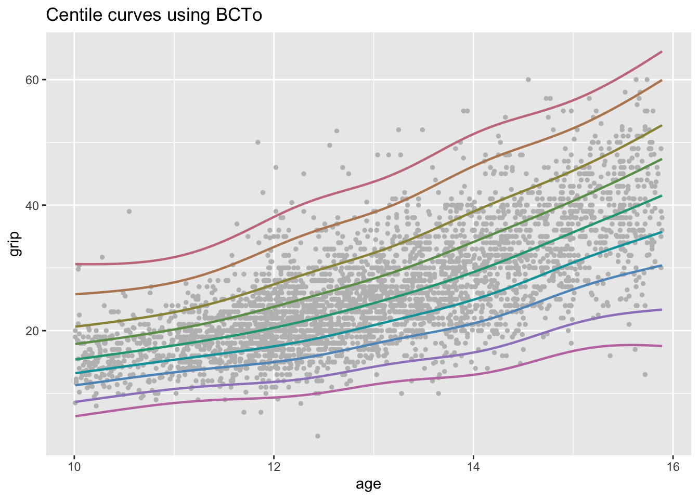
fitted_centiles_legend(gBCTo)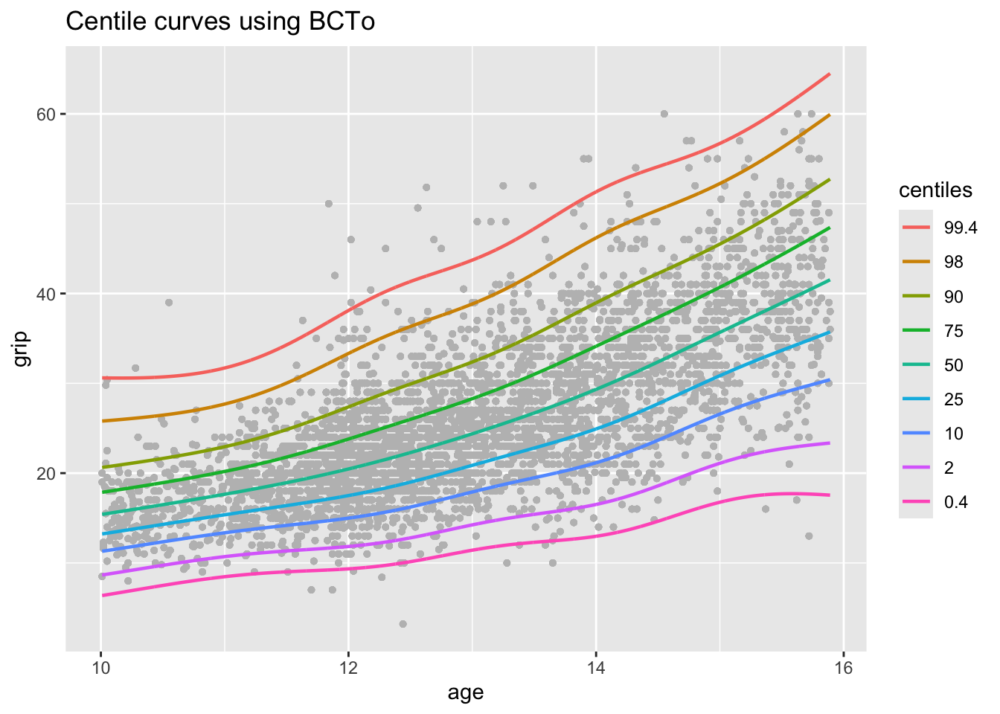
centiles just curves
fitted_centiles(gBCTo, points=FALSE)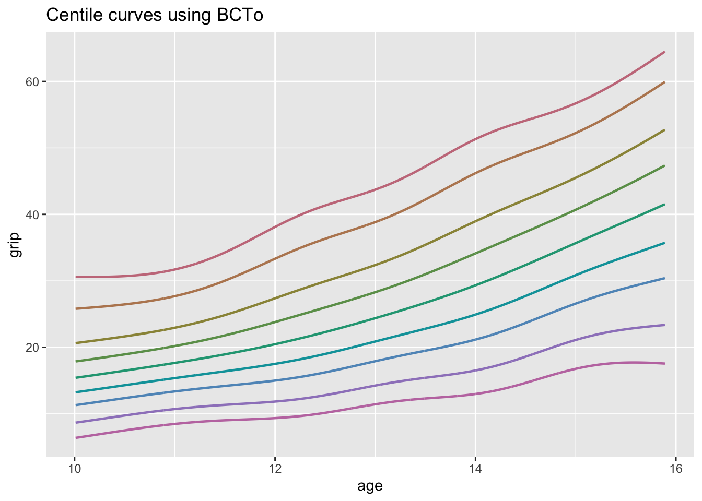
model centiles
model_centiles(gBCTo, gBCCGo)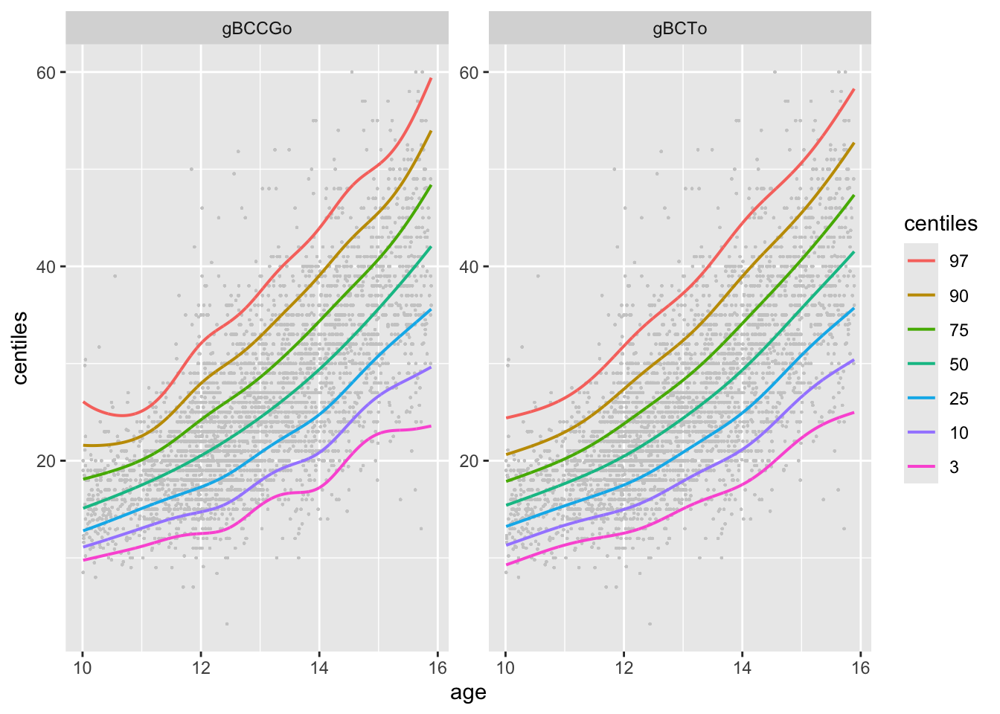
model centiles
model_centiles(gBCTo, gBCCGo, in.one=TRUE)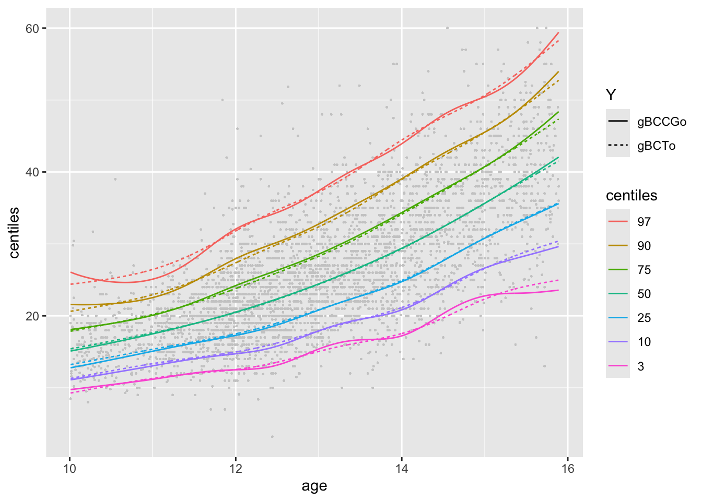
centiles for different ages
model_centiles(gBCTo, gBCCGo, in.one=TRUE)+
facet_wrap(cut_number(grip$age, 4), scales = "free_x")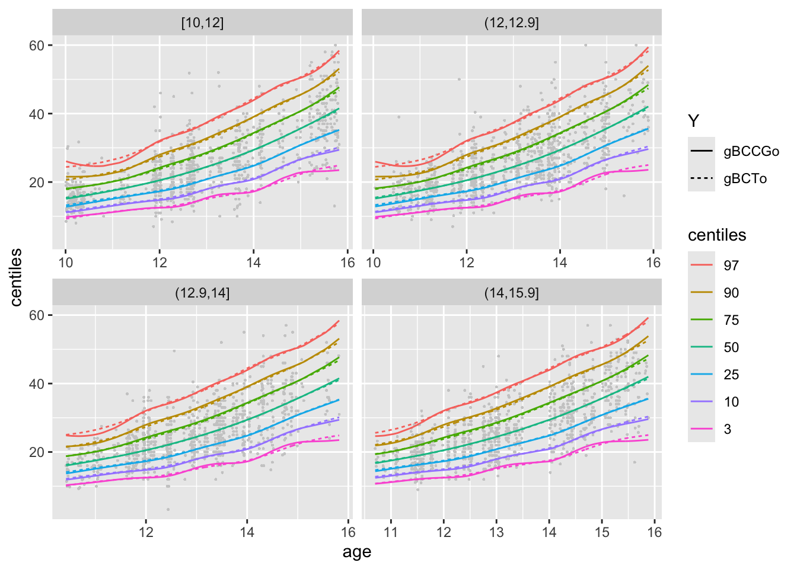
preditive values
library(broom)
library(knitr)
da <- predict(gBCTo, newdata=db[c(1, 1000, 2000, 3000, 6000,7000),])
da |> head() |> kable(digits = c(2, 4, 4, 4), format="pipe")| mu | sigma | nu | tau | |
|---|---|---|---|---|
| 1 | 3.90 | 0.7239 | 0.0457 | 0.4552 |
| 1042 | 4.32 | 0.6595 | 0.0578 | 0.5537 |
| 2091 | 5.16 | 0.5619 | 0.0787 | 0.7755 |
| 3118 | 10.83 | 0.2880 | 0.1656 | 3.1610 |
| 6327 | 49.25 | 0.2214 | 1.2786 | 39.0640 |
| 7422 | 88.19 | 0.2872 | 2.3255 | 101.9300 |
References
Cohen, D. D., C. Voss, M. J. D. Taylor, D. M. Stasinopoulos, A. Delextrat, and G. R. H. Sandercock. 2010. “Handgrip Strength in English Schoolchildren.” Acta Paediatrica 99: 1065–72.